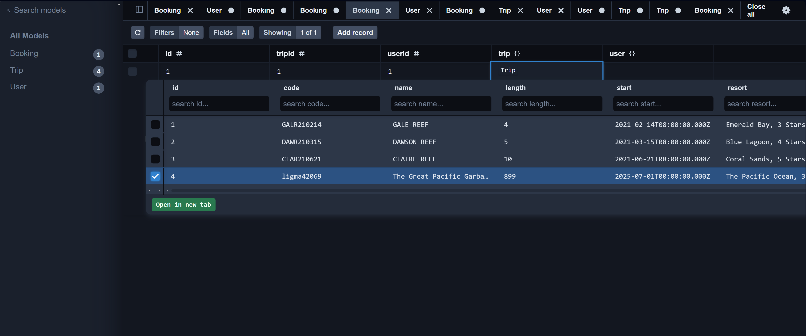

Original Artifact
A full stack application, it is designed to front-end a travelling website while back-ending a static database, in this case it stores the available trips. The front end supports a low-level security, with certain tokenized users being granted admin status. Said admin access grants the user to edit the trips database from the front end website, setting the stack up for future roles and scaling.
As mentioned before, this database is static, so the logical leap was to make it a relational one, as to support a scaling, inter-linked table system, especially as the first entry was designed with an admin user role in mind.
Base Code Review
Enhancement Implemented
The enhanced database utilized a PrismaSQL relational database. This db supported 3 major tables:
- User: Registered users would be granted access to Book available Trips. This table is linked directly to the Booking table.
- Booking: This is a join table between Trips and User.
- Trips: The original database that is displayed on the website frontend.
This change transformed a static database to a relational one, setting the scene for a scaling travelling web service.
Enhancement Demonstration
Artifact Narrative
The original artifact was a full stack database application projected and interacted with through a website frontend. The project was designed for a travelling and booking site, which I maintained the theme of for this submission. This enhancement, in summation, is a total overhaul of the current databasing system. The new artifact supports a PostreSQL relational database, front-ended by a Prisma object relational map, which replaces the previous static Mongo database.
The related tables in question that the new system supports feature two one-to-many relations, and a many-to-many join table. User tables, a one-to-many table, that contains each registered traveller, and relates each traveller to a Booking table, which is a joining table between the User and Trip table.
The Trip table holds details for each offered destination, including code, name, length, start, resort, perPerson, image, and description. This data originated from the MongoDB version and was migrated directly into PostgreSQL using a custom Node.js migration script. This allowed all original functionality to remain intact. Currently, only the Trip table can be modified through the site’s admin panel, with User and Booking tables handled entirely on the backend. Extending admin access to all tables outside of Prisma Studio is the next step.
I designed the relational schema from scratch and integrated Prisma Client for type-safe database operations, configuring both the datasource and generator in schema.prisma to output the client to a dedicated src/generated/prisma directory, making imports consistent across the backend. The migration script used both the official MongoDB Node.js Driver and Prisma Client to pull documents from MongoDB, transform fields (a lot of parsing and float conversion), and inserts them into the new relational structure.
The biggest security gaps right now are on the backend. The database credentials for the PostgreSQL user are stored in plaintext in the environment (and at one point hardcoded during troubleshooting), which is a serious risk if the codebase is exposed. Prisma Studio, if left open in production, gives direct table editing without authentication, essentially full database control to anyone with access. Ideally this will be fixed once I shift the database manipulation to the front-end, where I already have a security system in place.
One of the biggest challenges during development was reconciling the differences between MongoDB’s document model and PostgreSQL’s strict relational schema, specifically my fights were with the required foreign keys in the Booking table, creating a user that had all of the editing rights of the tables, and getting the migrate.js to adapt the existing backend service logic to the new relational model without breaking the Express.js routes. The result, however, is a system that is more scalable and better structured, but most importantly, is relational.